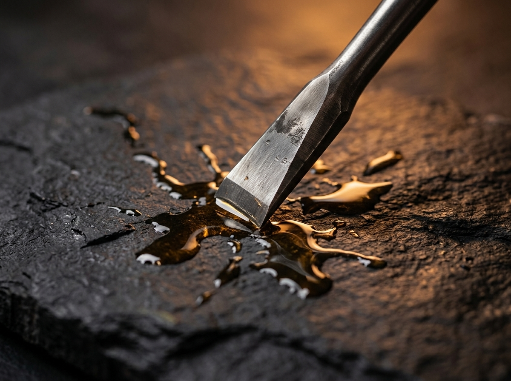
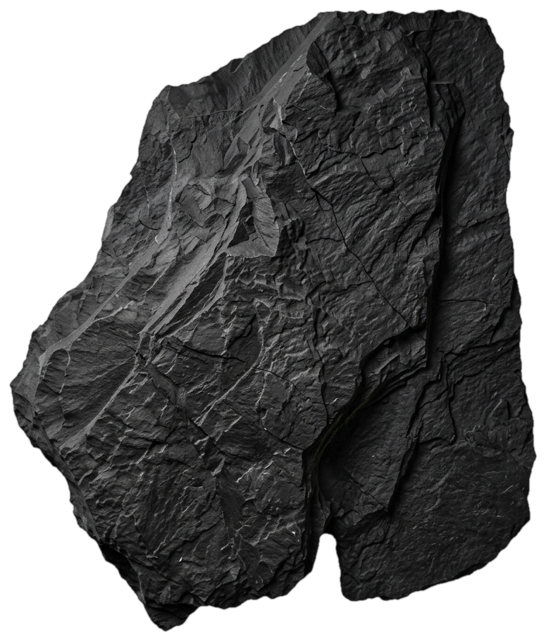
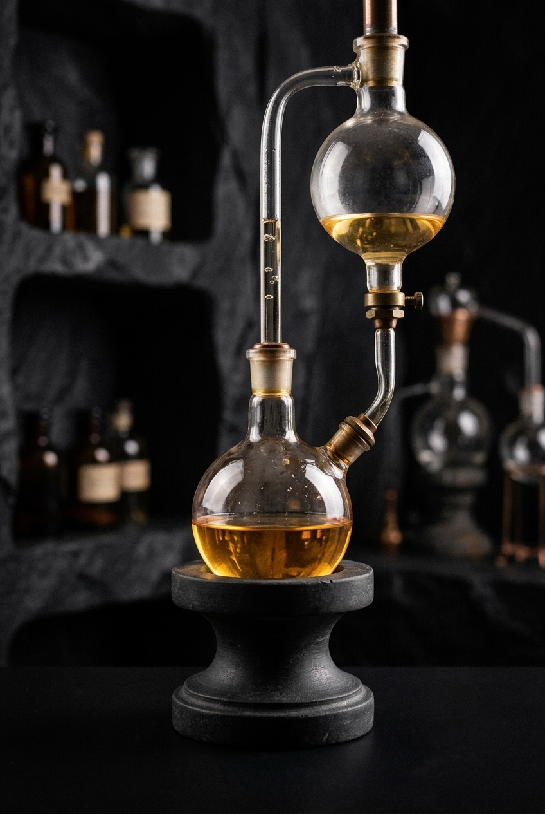
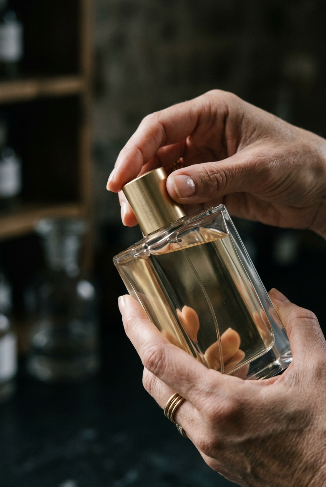

N° 01 · Extrait de Parfum
Ambre Solis
Resina de ládano defumada sobre açafrão quente e madeira de oud envelhecida. Denso, dourado, mineral.
€ 215 Extrait Concentré · 100 ml
01 / 03

A filosofia da maison nasce do encontro entre a força mineral da pedra basáltica e a delicadeza rara da alta perfumaria francesa.
Cada essência é esculpida com paciência artesanal, revelando acordes profundos que evocam a textura vulcânica e o brilho sutil do basalto.

Matérias-primas raras colhidas na origem, selecionadas pela pureza aromática e assinatura sensorial inconfundível.
Pétalas colhidas ao amanhecer, trazendo um coração floral aveludado com notas intensas de rosa negra.

Madeira nobre de aroma cremoso e envolvente, aquecendo a composição com elegância atemporal.
Lágrimas douradas de olíbano puro, conferindo um rastro místico, mineral e resinoso à fragrância.


O SABER-FAZER
Cada fragrância é macerada lentamente e envazada à mão em pequenos lotes numerados, unindo alquimia tradicional e precisão contemporânea em small batches.
ENCONTRE SUA ASSINATURA
Quel est votre parfum ?